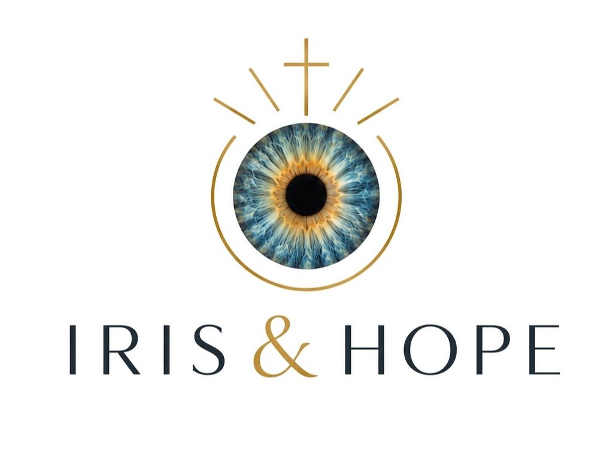
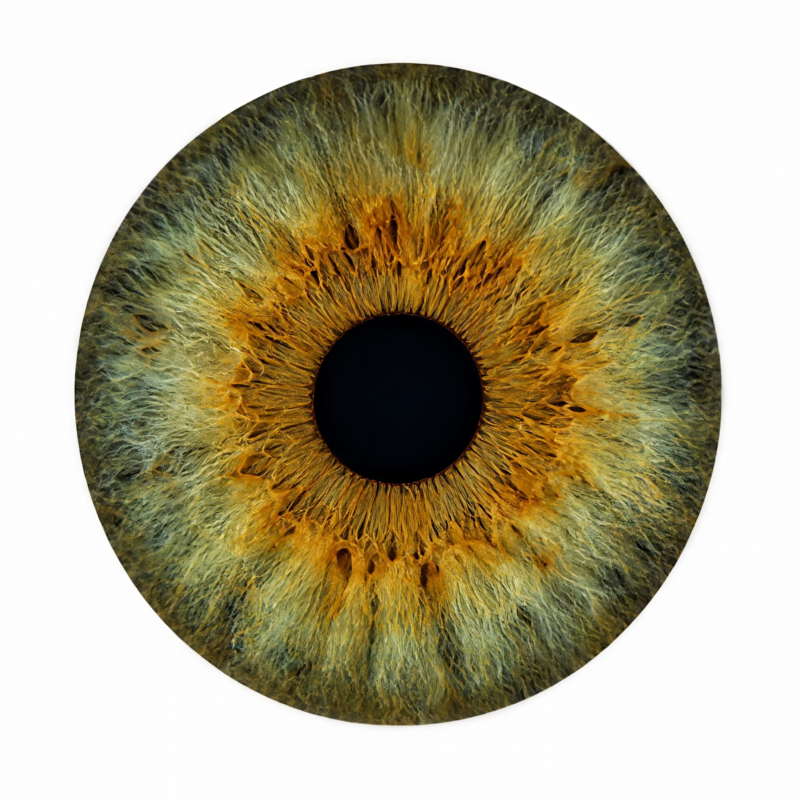
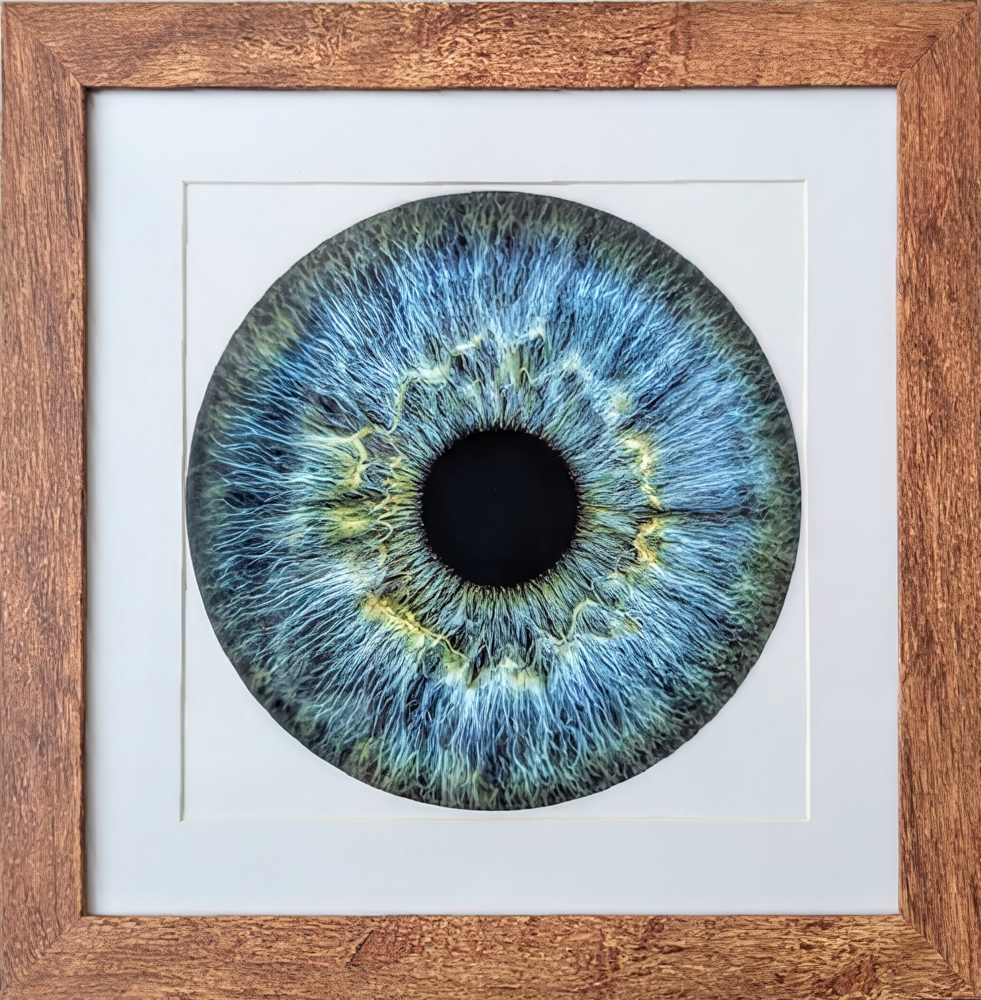
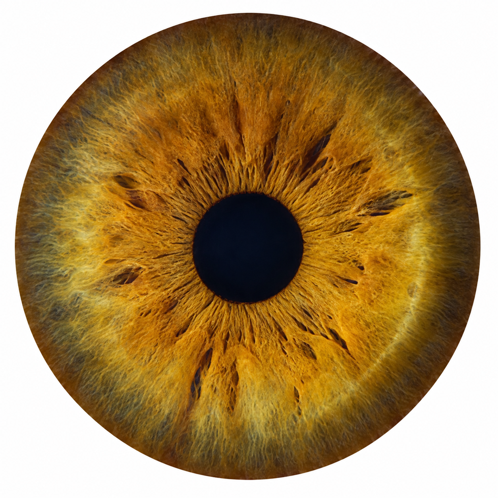

Discover the unique, microscopic landscapes hidden within your own eyes through high-resolution macro photography.
Per image
Per image (3 or more)
8x8 inch Print: +$10

Custom Framed: +$25


The human eye is extraordinary—delicate, complex, and uniquely beautiful. Every iris has its own colors, patterns, and details. No two are alike.
We often call the eyes the windows to the soul. Through them, we see the people we love, experience the world, and witness the beauty of creation.
Yet something we use every moment can easily be taken for granted.
Sight is a gift.
This is my iris (Jenny Schisler, co-founder of Iris & Hope). You can see brilliant brown and golden hues, but you cannot see the eye disease that is causing me to go blind. Retinitis pigmentosa, and chronic RP-associated macular edema led to my resignation from a visually demanding job I loved in May of 2026 and led me to start a home-based macro photography business to support our family and help fund a cure.
For those living with inherited retinal diseases, the gift of sight is threatened. These conditions gradually cause severe vision loss or blindness.
That is why finding treatments and cures matters. We want to give people the chance to keep seeing the faces they love, experiencing joy, learning, working, creating, and connecting with the world around them.
Sight is more than vision. It is connection, independence, experience, memory, and seeing the people and world God has created.
When we photograph an iris, we capture a glimpse of something wonderfully made—and a reminder of how precious sight truly is.
Until inherited retinal diseases can be cured, we can support those working toward that day. 10% of every purchase goes toward funding a cure.
Every eye is unique. Every person is valuable. Every moment of sight is worth saving.